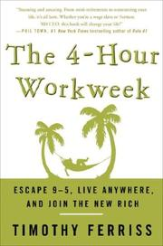
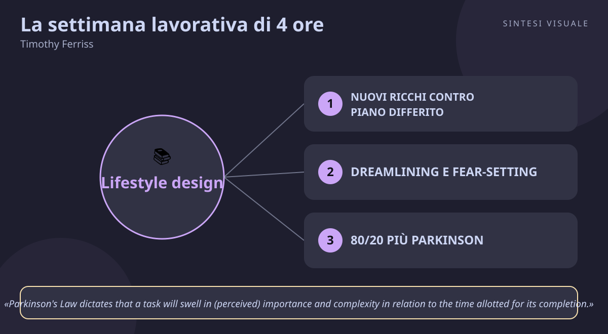

Home / Libri / La settimana lavorativa di 4 ore

La settimana lavorativa di 4 ore
Timothy Ferriss · Carriera e liberta
«La settimana lavorativa di 4 ore»
- Nuovi Ricchi
- 80/20 e Parkinson
- Musa automatica
- Mini-pensioni
🧭Introduzione
Timothy Ferriss è un imprenditore americano, laureato a Princeton, investitore in aziende come Uber e Shopify e autore di bestseller: l'idea di questo libro gli venne mentre lavorava 14 ore al giorno nella sua azienda di integratori BrainQUICKEN e, stremato, si prese tre settimane di vacanza in Europa scoprendo che l'azienda funzionava meglio con un'email al giorno e qualche assistente virtuale. Pubblicato il 27 aprile 2007 da Crown Publishing Group (edizione ampliata nel 2009; edizione italiana La settimana lavorativa di 4 ore), il libro è rimasto quattro anni nella classifica dei bestseller del New York Times, è stato tradotto in 40 lingue e ha venduto circa 2,1 milioni di copie.
Perché questo libro conta oggi: con il lavoro da remoto, i freelance e l'intelligenza artificiale che automatizza mezza scrivania, la domanda non è più "come faccio carriera", ma "che vita voglio disegnare — e quanto lavoro serve davvero per pagarla". Ferriss è stato tra i primi a dirlo chiaro, e le sue idee su eliminazione, delega e mini-pensioni sono il manuale originario dei nomadi digitali.
A chi è utile: a chi si sente incastrato in settimane da 50 ore e vuole riprendere tempo senza aspettare la pensione; a freelance, venditori e piccoli imprenditori che vogliono automatizzare parte del reddito; a chiunque voglia negoziare lavoro da remoto o lanciare un progetto secondario testandolo con pochi soldi.
📘Riassunto
La scintilla centrale: non serve lavorare 40 anni per poi godersi la vita a 65 anni — si può progettare fin da ora una vita fatta di tempo libero e mobilità, costruendo un reddito che gira anche senza la tua presenza continua.
La struttura logica segue l'acronimo DEAL:
- Definition (Definizione) — definisci che vita vuoi davvero: i Nuovi Ricchi misurano la ricchezza in tempo e mobilità, non in stipendio; con il dreamlining (sogni con prezzi e scadenze) e il fear-setting (scrivere nero su bianco il peggio che può accadere) trasformi paure vaghe in piani concreti.
- Elimination (Eliminazione) — uccidi il lavoro inutile prima di ottimizzarlo: dieta ipo-informativa, legge di Pareto 80/20 e legge di Parkinson per lavorare meno e produrre di più.
- Automation (Automazione) — costruisci una "musa", un piccolo business quasi automatico (tipicamente prodotti informativi testati con piccoli annunci), delegato ad assistenti virtuali e regole automatiche, che porta cassa senza la tua presenza.
- Liberation (Liberazione) — sganciati dalla scrivania: lavoro da remoto negoziato col capo, mini-pensioni distribuite nella vita invece di un'unica pensione alla fine, mobilità geografica per moltiplicare il valore di ogni euro.
Il punto di svolta: non automatizzare il caos: prima elimina l'inutile, poi automatizza solo ciò che resta. È qui che il lettore capisce che il "lavorare 4 ore" è una provocazione: il vero obiettivo è smettere di confondere l'essere occupati con l'essere produttivi.
L'eredità oggi: il libro ha anticipato di quindici anni il lavoro da remoto, l'economia dei freelance e il movimento FIRE; i concetti di dieta informativa, batching delle email e assistenti virtuali sono ormai pratica standard, e il fear-setting è citato da psicologi e coach come strumento contro la ruminazione.
💡Concetti chiave
- Nuovi Ricchi contro piano differito: la ricchezza vera si misura in tempo e mobilità, non in stipendio — smetti di rimandare la vita alla pensione.
- Dreamlining e fear-setting: trasforma sogni vaghi in obiettivi con prezzo e scadenza, e paure vaghe in scenari scritti che quasi sempre fanno meno paura.
- 80/20 più Parkinson: concentrati sul 20% che produce l'80% dei risultati e dai a ogni compito scadenze brevissime.
- Dieta ipo-informativa: taglia notizie, social ed email continue — l'ignoranza selettiva è una strategia di produttività.
- Muse e automazione: costruisci un piccolo reddito quasi automatico, testato in piccolo e delegato ad altri.
- Mini-pensioni e liberazione: distribuisci viaggi e pause lunghe durante la vita invece di aspettare i 65 anni.
📖1. Nuovi Ricchi contro piano differito
- Definizione i Nuovi Ricchi sono chi usa tempo e mobilità come moneta: guadagna abbastanza per la vita che vuole e decide dove, quando e con chi lavorare. Il "piano differito" è il contrario: sgobba per decenni, risparmia tutto e rimanda viaggi, hobby e famiglia alla pensione.
- Esempio due colleghi con lo stesso stipendio: uno compra una casa più grande e resta incollato agli straordinari per il mutuo; l'altro affitta più piccolo, lavora da remoto tre mesi da una città di mare dove spende la metà, e si allena ogni mattina.
- Come applicarlo scrivi in una pagina la settimana-tipo che vorresti tra due anni (dove vivi, orari, con chi stai, cosa fai al mattino); poi calcola quanto costa davvero al mese: quasi sempre è meno di quanto temi, e da lì capisci quanto reddito ti serve.
- Errore comune inseguire un numero magico ("quando avrò X in banca vivrò") senza definire cosa farai dopo — la X cresce all'infinito per paura del vuoto.
- Collegamento dialoga con Seneca sul tempo ("non abbiamo poco tempo, ma ne perdiamo molto") e con il movimento FIRE (indipendenza finanziaria) nato negli stessi anni.
📖2. Dreamlining e fear-setting
- Definizione il dreamlining è dare a ogni sogno una scadenza a 6 e 12 mesi diviso in avere, essere e fare, con il costo mensile scritto accanto; il fear-setting è scrivere il peggio che può succedere se provi a cambiare, le contromisure e il costo di non fare nulla.
- Esempio sogni di aprire una piccola attività online di corsi di cucina: scrivi "entro giugno: 10 clienti di prova a 50 euro" e, sul fronte paura, "peggio realistico: perdo 500 euro di annunci e due weekend — rimedio: torno al mio lavoro attuale che resta lì".
- Come applicarlo prendi un foglio diviso in tre colonne (definisci il peggio / come lo prevengo o riparo / cosa succede tra un anno se non provo): 10 minuti di scrittura bastano a sgonfiare la maggior parte delle paure.
- Errore comune fermarsi alla lista dei desideri senza prezzi né date — resta fantasia e colpevolizza invece di guidare.
- Collegamento è la versione pratica degli stoici cari a questa rubrica (Marco Aurelio, Epitteto): premeditare il male per togliergli potere, e della terapia cognitiva di Burns (Feeling Good, già trattato) che smaschera i pensieri catastrofici mettendoli nero su bianco.
📖3. 80/20 più Parkinson
- Definizione la legge di Pareto dice che l'80% dei risultati viene dal 20% delle azioni; la legge di Parkinson dice che un compito si gonfia fino a riempire tutto il tempo che gli concedi. Ferriss le usa insieme: prima isola le poche azioni che contano, poi strozzale con scadenze brevissime.
- Esempio in un negozio scopri che due prodotti e tre clienti storici fanno quasi tutto il margine, ma passi le giornate a rispondere a richieste minori: tagli le richieste sotto una soglia, dai a te stesso due ore per chiudere i preventivi grossi — e finisci prima e meglio.
- Come applicarlo per una settimana segna ogni sera le 2-3 attività che hanno prodotto davvero risultati; la settimana dopo dedica le prime due ore del giorno solo a quelle, con un timer, e sposta o elimina il resto.
- Errore comune usare le scadenze strette per fare più cose inutili più in fretta — la velocità senza selezione è solo affanno elegante.
- Collegamento richiama Essentialism di McKeown (già trattato: "meno ma meglio") e Deep Work di Newport (già trattato): il focus batte le ore.
📖4. Dieta ipo-informativa
- Definizione ignoranza selettiva e a tempo: niente notizie a colazione, social ed email consultati in blocchi programmati, interruzioni ridotte al minimo. L'idea è che quasi nessuna informazione "urgente" lo è davvero, e che il costo dell'interruzione supera il valore dell'aggiornamento.
- Esempio togli le notifiche del telefono e controlli email e messaggi solo alle 11 e alle 16: scopri che i "fuochi" si sono spenti da soli o si risolvono in una telefonata invece di dieci scambi ansiosi.
- Come applicarlo per 5 giorni lavorativi applica la regola dei due blocchi (email solo a metà mattina e metà pomeriggio), un check delle notizie solo la sera per 15 minuti, telefono in modalità silenziosa durante i blocchi di lavoro vero.
- Errore comune confondere l'essere informati con l'essere preparati — sapere tutto di tutto è procrastinazione travestita da lavoro.
- Collegamento è il gemello operativo di Newport (Deep Work): difendere l'attenzione è il prerequisito di ogni risultato, e di Goleman (Intelligenza emotiva, già trattata) sull'autoregolazione.
📖5. Muse e automazione
- Definizione una "musa" è un piccolo business che finanzia la tua libertà: prodotto semplice (spesso informativo), venduto online, testato con pochi annunci prima di investirci, poi gestito con delega e regole automatiche. La regola d'oro è: elimina prima l'inutile, delega solo ciò che resta, e solo alla fine automatizza.
- Esempio un'insegnante registra un mini-corso di 20 lezioni, lo vende a 79 euro con una pagina semplice, testa il titolo con 100 euro di annunci, e affida assistenza e fatture a una collaboratrice con istruzioni scritte passo passo.
- Come applicarlo parti dal test, non dal prodotto perfetto: una pagina, un prezzo, un piccolo budget pubblicitario per misurare l'interesse; documenta ogni compito ripetitivo in una procedura di una pagina prima di delegarlo a qualcuno.
- Errore comune automatizzare un processo rotto o delegare senza istruzioni scritte — ottieni solo caos più veloce e collaboratori frustrati.
- Collegamento richiama Il potere delle abitudini di Duhigg e Atomic Habits di Clear (entrambi già trattati): i sistemi battono gli obiettivi, e le procedure scritte sono abitudini esternalizzate.
📖6. Mini-pensioni e liberazione
- Definizione invece di un'unica pensione a 65 anni, distribuisci nella vita periodi di mesi dedicati a viaggi, studio o progetti; sul lavoro dipendente significa negoziare remoto e obiettivi misurabili invece di presenza in ufficio.
- Esempio invece di due settimane di ferie sempre di corsa, negozi un mese di lavoro da remoto da casa dei genitori più due settimane staccate per un corso intensivo di lingua: stesso stipendio, vita molto diversa.
- Come applicarlo prepara una proposta di prova al tuo capo (due settimane di remoto con obiettivi misurabili e report quotidiano di una riga); oppure pianifica una mini-pensione breve e vicina prima di sognare l'anno sabbatico ai tropici.
- Errore comune credere che serva prima il permesso perfetto o il gruzzolo perfetto — l'attesa infinita è il vero piano differito travestito da prudenza.
- Collegamento dialoga con Thoreau ("andare nei boschi per vivere con saggezza") e con Start with Why di Sinek (già trattato): la libertà senza un perché diventa solo un'altra forma di noia.
💬Citazioni da ricordare
"Parkinson's Law dictates that a task will swell in (perceived) importance and complexity in relation to the time allotted for its completion." — È la legge che spiega perché le giornate piene producono poco: dai a un compito l'intera giornata e occuperà l'intera giornata; conta perché trasforma la gestione del tempo in progettazione di scadenze.
"\"What do you want?\" is too imprecise to produce a meaningful and actionable answer." — Ricorda che le domande vaghe producono vite vaghe: solo obiettivi con prezzo, data e passi diventano piani; conta perché è il cuore del dreamlining e di tutto il metodo DEAL.
🌍Esempi di oggi
- Il venditore sommerso dalle email: un agente passa tre ore al giorno a rispondere a richieste che non portano ordini. Applica 80/20: scopre che 4 clienti fanno il 70% del fatturato, mette le email in due blocchi giornalieri e un risponditore che indica le fasce di contatto. In un mese recupera dieci ore a settimana da dedicare ai clienti grossi.
- La famiglia che sogna il cambio vita: marito e moglie sognano "più tempo insieme" ma non fanno nulla. Fanno dreamlining: "tra 6 mesi, un mese estivo in un paese dove l'affitto costa la metà, budget 2.500 euro". Il numero concreto rende il progetto negoziabile col datore di lavoro invece di restare un lamento domenicale.
- L'artigiano che diventa "musa": una parrucchiera registra 15 video su piega e colore, li vende a 49 euro alle clienti fuori città, e delega prenotazioni e messaggi a un'assistente con risposte pre-scritte. Non lavora 4 ore, ma il secondo reddito le paga le ferie lunghe di settembre.
🛠️Azioni pratiche
- Fai il tuo fear-setting lampo: prendi una decisione che rimandi (chiedere il remoto, lanciare un side-project, cambiare orari) e scrivi in 10 minuti il peggio realistico, una contromisura e il costo di non fare nulla per un anno.
- Taglia un 20% inutile: scegli un'informazione o una riunione da eliminare per 5 giorni (notizie al mattino, un gruppo chat, una call senza ordine del giorno) e misura quanto tempo recuperi.
- Testa in piccolo: invece di pianificare il progetto perfetto, lancia una micro-prova entro domenica (una pagina, un annuncio da pochi euro, 5 telefonate a potenziali clienti) e decidi solo sui numeri.
💎Da portare a casa
Non servono giornate più lunghe: servono obiettivi con prezzo e data, meno rumori, e sistemi che lavorano anche quando tu non ci sei.
Vuoi approfondire? Rispondi in chat con il numero del concetto (1–6) che ti interessa di più e lo espando con altri esempi e casi reali, oppure fammi una domanda su un tema: carriera, vendite, negoziazione, produttività, stress, emozioni, libertà finanziaria.
🖼️In un colpo d’occhio

Tocca l’immagine per ingrandirla.